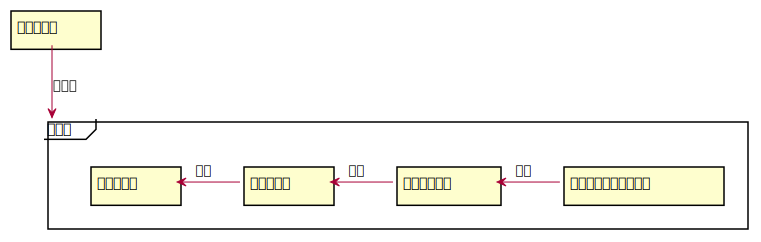

1. はじめに¶
この文章はトランプゲーム「BlackPoker」の全てのルールをまとめた文章です。
詳細なルールが記載されており、初心者の方は文章の量に圧倒されます。 ゲームをプレイする際に全てを熟読する必要はありませんが、 ルールについて深く知りたい、または新しいルールに触れたい方はぜひ熟読してください。
1.1. ルールの構成¶
ルールの構成は次のようになっています。

1.2. ルール指針¶
ルールを作成・修正するための指針を示します。
1.2.1. 誰とでも戦える ~目指すは老若男女~¶
ルールを知りトランプを持っていれば誰とでも遊べるゲームを目指します。
1.2.2. 個性が出せる ~オリジナルトランプ・デッキ構築~¶
さまざまなトランプが使え見た目で個性を出せるのはもちろんのこと、 デッキ構築の面でも自分のしたい戦い方が表現できることを目指します。
1.2.3. 短く終わる ~1戦15分~¶
時間をかけずさっと遊べることを目指します。
1.2.4. ずっと使えるデッキ¶
愛着のあるカードがずっと使えるようなルールとします。
1.2.5. 必要な物は最小限 ~トランプのみ~¶
用意するものはトランプのみ。それ以外の道具は必要ないルールとします。
1.2.6. プレイング重視 ~5：3：2＝技：運：構築~¶
運やデッキ構築より技量を重視したルールを目指します。
1.2.7. ベースルールはトレーディングカードゲーム¶
カードゲームプレイヤーが覚えやすいルールを目指します。
1.2.8. カスタマイズ可能 ~基本と拡張の分離~¶
基本ルールと拡張ルールを分離し、大富豪のようにローカルルールが作成できることを目指します。
1.2.9. ルールの更新 ~飽き防止＆不備改善~¶
新たなルールを度々公開し、飽きを防止します。またルールに不備がある場合、随時改善します。
1.2.10. 相手のカードに触らない¶
盗難防止とネット対戦対応に努めます。